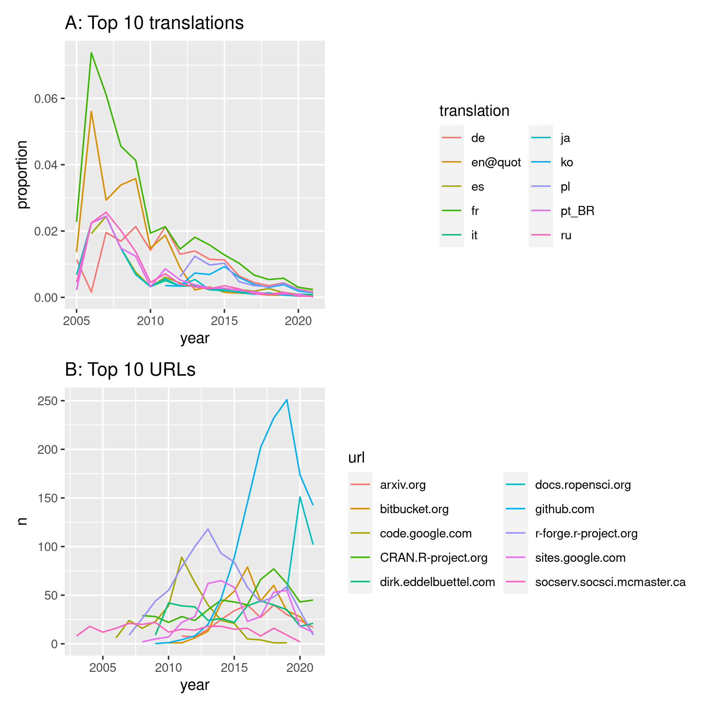

library ("pkgstatsAnalyses")
here <- here::here ()
v_data_dir <- file.path (here, "vignettes", "data")
datafile <- file.path (here, "data-raw", "pkgstats-results.Rds")
f_fig2_top10 <- file.path (v_data_dir, "fig02-top10.Rds")
f_fig2_tr <- file.path (v_data_dir, "fig02-tr.Rds")
fig2_calc_top10_data <- !file.exists (f_fig2_top10)
fig2_calc_tr_data <- !file.exists (f_fig2_tr)
fig02_png <- file.path (here, "vignettes", "figures", "fig02.png")
fig2_calc_top10_data <- fig2_calc_top10_data & !file.exists (fig02_png)
fig2_calc_tr_data <- fig2_calc_tr_data & !file.exists (fig02_png)
x <- load_pkgstats_data (datafile, raw = TRUE, latest = FALSE)
x <- lapply (split (x, f = as.factor (x$year)), function (i) {
urls <- unlist (strsplit (i$urls, ",|;|\\n|\\s"))
urls <- gsub ("^(\\s*?)http(s?)\\:\\/\\/", "", urls [!is.na (urls)])
urls <- table (gsub ("\\/.*$", "", urls))
urls <- sort (urls, decreasing = TRUE)
data.frame (year = rep (i$year [1], length (urls)),
url = names (urls),
n = as.integer (urls))
})
x <- do.call (rbind, x)
x <- x [which (!x$url == ""), ]
rownames (x) <- NULL
x$year <- lubridate::year (paste0 (x$year, "-01-01"))
top10 <- x |>
group_by (url) |>
summarise (n = sum (n)) |>
arrange (desc (n))
top10 <- top10 [-grep ("^(cran|www\\.r-project)", top10$url), ]
x_top10 <- x [which (x$url %in% top10$url [1:10]), ]
x_top10$n [x_top10$url == "github.com"] <-
x_top10$n [x_top10$url == "github.com"] / 20
saveRDS (x_top10, f_fig2_top10)
x <- load_pkgstats_data (datafile, raw = TRUE, latest = FALSE)
x$translations [x$translations == "NA"] <- NA_character_
tr <- lapply (split (x, f = as.factor (x$year)), function (i) {
tr <- unlist (strsplit (i$translations, ","))
tr <- gsub ("^\\s*|\\s*$", "", tr [which (!is.na (tr))])
tab <- sort (table (tr), decreasing = TRUE)
data.frame (translation = names (tab),
n = as.integer (tab)) })
tr <- tr [which (vapply (tr, nrow, integer (1)) > 0)]
for (i in seq_along (tr)) {
tr [[i]]$year <- names (tr) [i]
}
tr <- do.call (rbind, tr)
rownames (tr) <- NULL
tr$year <- lubridate::year (paste0 (tr$year, "-01-01"))
# total numbers of packages for each year:
n <- x |>
group_by (year) |>
summarise (n = length (unique (package)))
tr$ntot <- n$n [match (tr$year, n$year)]
tr_summary <- tr |>
group_by (translation) |>
summarise (n = sum (n)) |>
arrange (desc (n))
top10 <- tr_summary$translation [1:10]
tr_top10 <- tr [which (tr$translation %in% top10), ]
tr_all <- tr |>
group_by (year) |>
summarise (n = sum (n),
ntot = head (ntot, 1))
tr_all$translation <- "ALL"
tr_top10 <- bind_rows (tr_top10, tr_all)
saveRDS (tr_top10, f_fig2_tr)

Figure 2. (A) Annual frequencies of the top 10 translations. (B) Annual frequencies of the top 10 primary URL domains, with frequencies for GitHub divided by 20.